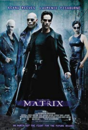

The Matrix
Sinopsis
Neo (Keanu Reeves) es un joven pirata informático que lleva una doble vida: durante el día ejerce en una empresa de servicios informáticos, mientras que por la noche se dedica a piratear bases de datos y saltarse sistemas de alta seguridad. Su vida cambiará cuando una noche conozca a Trinity (Carrie-Anne Moss), una misteriosa joven que parece ser una leyenda en el mundo de los 'hackers' informáticos. Será ella quien lleve a Neo ante su líder: Morfeo (Laurence Fishburne). Así descubrirá una terrible realidad y el joven deberá decidir si unirse a la resistencia o vivir su vida como hasta ahora. ¿Elegirá Neo la pastilla azul o la roja?
Año: 1999
Director: Wachowski Brothers
Género: Acción, Ciencia Ficción
Precio: 5€
Neo (Keanu Reeves) es un joven pirata informático que lleva una doble vida: durante el día ejerce en una empresa de servicios informáticos, mientras que por la noche se dedica a piratear bases de datos y saltarse sistemas de alta seguridad. Su vida cambiará cuando una noche conozca a Trinity (Carrie-Anne Moss), una misteriosa joven que parece ser una leyenda en el mundo de los 'hackers' informáticos. Será ella quien lleve a Neo ante su líder: Morfeo (Laurence Fishburne). Así descubrirá una terrible realidad y el joven deberá decidir si unirse a la resistencia o vivir su vida como hasta ahora. ¿Elegirá Neo la pastilla azul o la roja?
Año: 1999
Director: Wachowski Brothers
Género: Acción, Ciencia Ficción
Precio: 5€